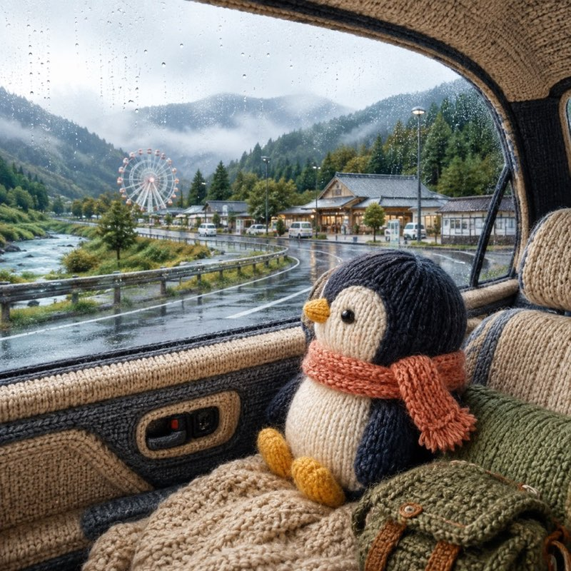
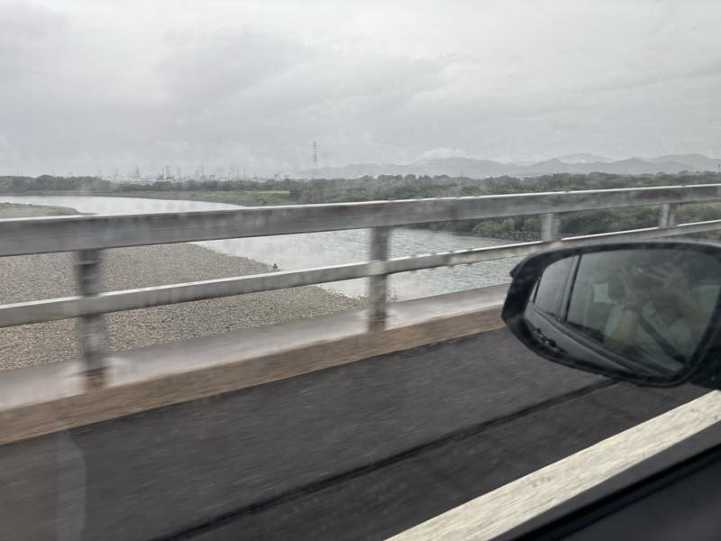
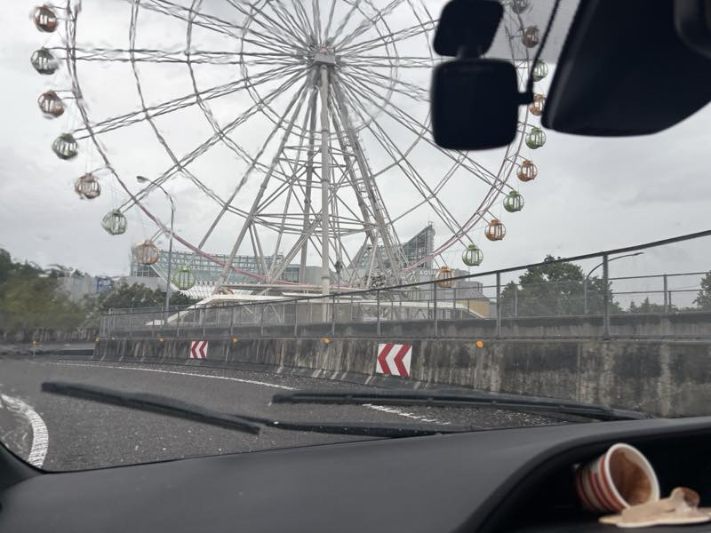
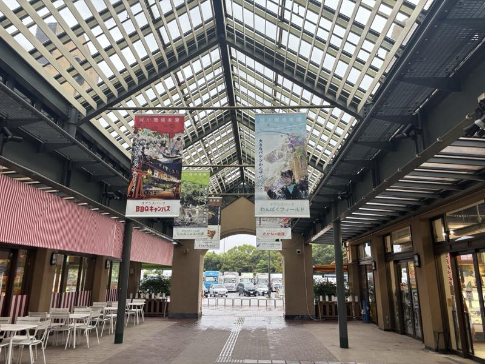
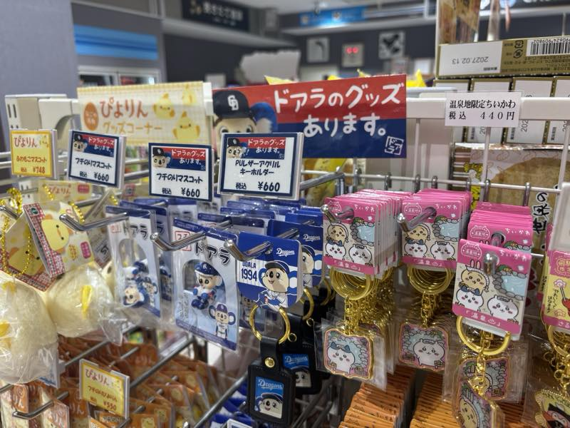
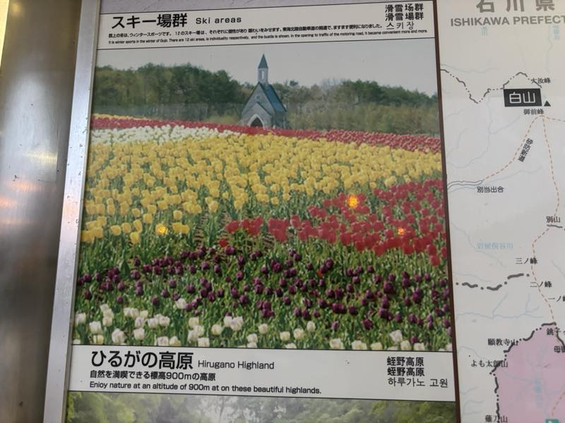

On the way to Gifu with my mother, we stopped at expressway service areas that felt like theme parks 🐧

I went to Gifu together with my mother, to my grandmother's house (my mother's mother) in Gujo City.
Well, to begin with, if I had a driver's license, this would all be solved! 😳 But even though I am 22, I still do not have a driver's license.
Still, my mother had not been feeling well recently, and she wanted to relax in Gifu for a while. But it takes about 2 hours from Nagoya to Gujo City in Gifu, and my mother seemed worried, thinking “what if I feel sick on the way,” so I wanted to go with her, and I decided to go.
I held hands with my mother for the first time since I was about in kindergarten. They say that people really do calm down when they hold hands.
Today I want to talk about the expressways in Japan that we passed on the way to Gifu.

Once you leave Nagoya heading north, you see a river called the Kiso River. The Kiso River is a very famous river for people in Nagoya.
And there is an interchange called Kisogawa Park, which has a Ferris wheel. This is less like a highway service area and more like an amusement park.


They were selling all kinds of pool toys for kids.
And Gifu is also fan territory for the Chunichi Dragons, a pro baseball team from Nagoya, so the service area sells goods featuring Doara, the Chunichi Dragons mascot.

Since I was worried about how my mother was feeling, and the expressways in Gifu have a service area roughly every 20km, we stopped at almost every single one.

My grandmother's house is near Hirugano Highland, so that is where we headed.